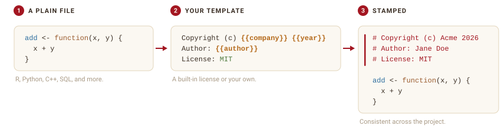
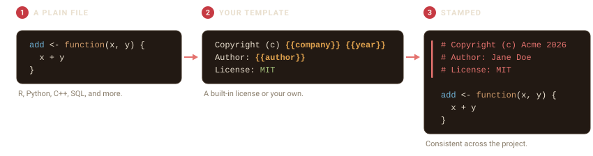
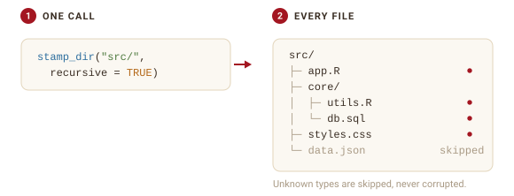
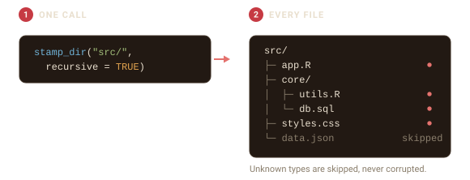

script <- tempfile(fileext = ".R")
writeLines(c("add <- function(x, y) {", " x + y", "}"), script)filestamp adds and maintains a consistent header at the top of your source files, in whatever comment style each language uses. You pick a template, point filestamp at a file or a directory, and it writes the header for you.


Stamp a single file
stamp_file() writes a header to the top of one file. Here is a small R script with no header:
Stamp it with the default template:
stamp_file(script, author = "Jane Doe")The header is inserted at the top, in R’s # comment style, and your code is left untouched below it.
Preview before you write
Pass action = "dryrun" to see the header without changing the file. The result prints where the header would go and how the file would be written:
preview <- tempfile(fileext = ".R")
writeLines("y <- 2", preview)
stamp_file(preview, template = "mit", action = "dryrun")Keep a backup
action = "backup" copies the file to <name>.bck before stamping, so you always have the original:
safe <- tempfile(fileext = ".R")
writeLines("z <- 3", safe)
stamp_file(safe, action = "backup", author = "Jane Doe")
file.exists(paste0(safe, ".bck"))
#> [1] TRUEfilestamp never re-stamps a file that already has a header, so running it twice is safe.
Stamp a whole directory
stamp_dir() stamps every file it finds. Use pattern to match certain files and recursive = TRUE to descend into subdirectories.


project <- file.path(tempdir(), "project")
dir.create(file.path(project, "R"), recursive = TRUE, showWarnings = FALSE)
writeLines("f <- function() 1", file.path(project, "R", "app.R"))
writeLines("def g(): pass", file.path(project, "helpers.py"))
writeLines('{"name": "demo"}', file.path(project, "config.json"))
result <- stamp_dir(project, author = "Jane Doe", recursive = TRUE)
#> Warning: Skipping '/tmp/Rtmpu6Sbew/project/config.json': unrecognized file type.
#> ℹ No language with a known comment syntax is registered for this extension.The result records what happened to each file:
data.frame(
file = basename(vapply(result$results, `[[`, "", "file")),
status = vapply(result$results, `[[`, "", "status")
)
#> file status
#> 1 config.json skipped
#> 2 helpers.py success
#> 3 app.R successThe config.json file is reported as skipped: JSON has no comment syntax, so filestamp leaves it untouched instead of writing an invalid header. This is a core promise: filestamp will not corrupt a file it does not know how to comment. See vignette("language-support") for how detection works.
Where to next
-
vignette("licenses-and-templates")covers the built-in license templates, custom templates, and variables. -
vignette("language-support")covers the languages filestamp knows and how to add your own. -
vignette("maintaining-headers")covers updating copyright years and authors in files that are already stamped.